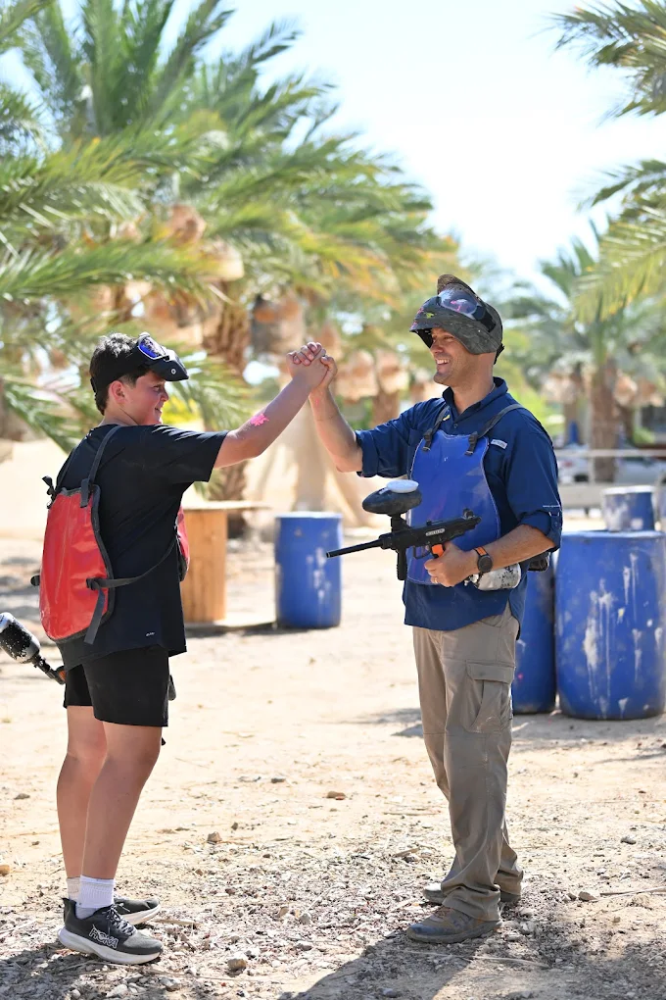

פעילויות בערבהבמרחק הליכה מהחאן!
פיינטבול בצופר – אתגר בתמר
מוכנים לאתגר האולטימטיבי? ב"אתגר בתמר" – פיינטבול חוויתי בערבה – מזמינים אתכם להיכנס לזירת קרב מדברית! בין עצי תמר ענקיים במושב צופר מחכה לכם שדה הקרב המושלם לפרוק אדרנלין.
בילוי מושלם לקבוצות, משפחות וזוגות – חוויה מגבשת מלאת אדרנלין במיקום הכי מיוחד בדרום.
5 דקות הליכה מהחאן · 058-6879996
למידע נוסף